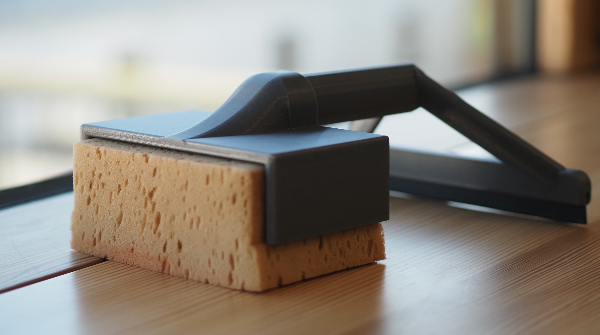
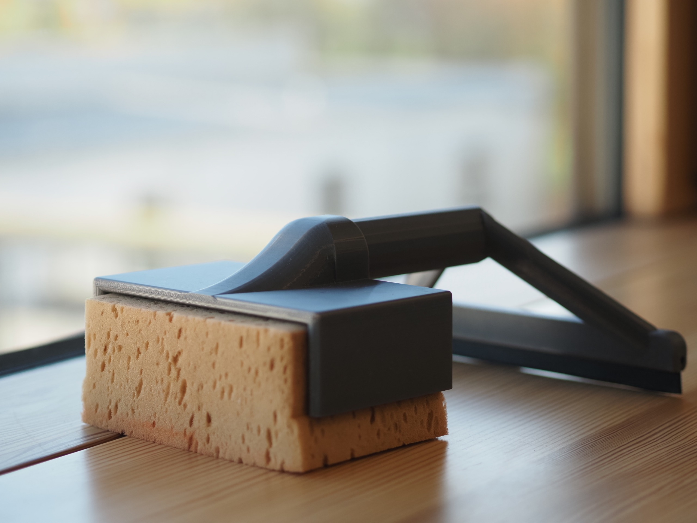
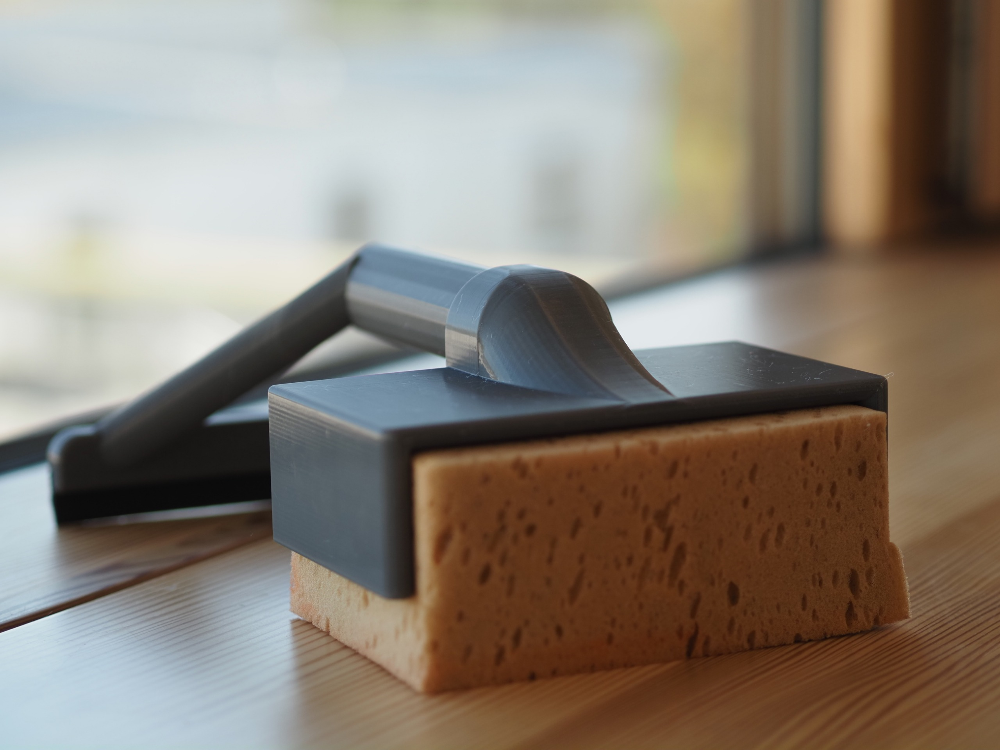
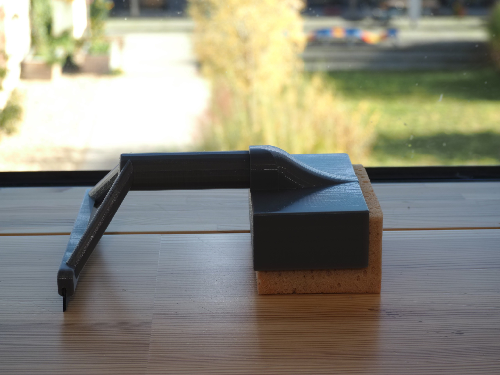

Schwamm-Klammer

Ein Tafelschwamm mit Abzieher für effizientes Reinigen, somit ist nur eine Person erforderlich.
Projektübersicht
Unsere Idee bestand darin, einen Tafelschwamm mit einem Abzieher zu kombinieren, um den Reinigungsprozess zu beschleunigen. Dadurch kann die Arbeit effizienter erledigt werden und es wird nur eine Person benötigt.
Vorteil: Das Reinigen von beispielsweise Schultafeln wird deutlich erleichtert, da der kombinierte Einsatz von Tafelschwamm und Abzieher eine schnellere und effizientere Reinigung ermöglicht. Dadurch wird nicht nur Zeit eingespart, sondern auch der Personalbedarf reduziert, da die Arbeit von nur einer Person ausgeführt werden kann. Die Konstruktion wurde eigenständig in Fusion 360 entworfen und anschließend mit dem 3D-Drucker gefertigt.
Team-Information
Schüler: Valentin Krückl, Leonhard Jünger, Sebastian Speth
Klassenstufen: 7/8
Fachbereich: Arbeitswelt
Betreuer: Johannes Danner
Projekt-Galerie


